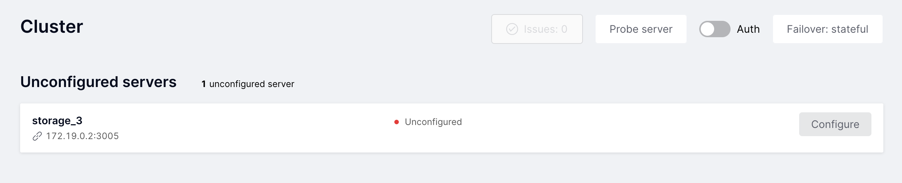

Adding cluster nodes¶
Adding a new node (instance) to a TDG cluster is actually the same deployment operation as you did earlier.
In this example, you will take the already deployed TDG cluster, deploy a new TDG instance and configure it via web interface by creating a new replica set with the storage cluster role.
For deploying a new instance, you will use the same tar.gz package and the Ansible tool with the predefined inventory and playbook configuration
as for the initial cluster deployment.
Navigate to the deploy directory extracted earlier from the
tar.gzpackage and edit the Ansible inventory filehosts.yml. You need to add the description of a new instance and its parameters. In the code block below, parameters that should be added are marked with the comments# <-- Add ....children: tdg_group: ### Instances ### hosts: ... storage_3: # <-- Add a new instance and its configuration parameters config: advertise_uri: "172.19.0.2:3005" http_port: 8085 memtx_memory: 1073741824 # 1024 Mb children: ### Machines ### vm1: hosts: stateboard_instance: core: runner_1: storage_1: storage_2: storage_3: # <-- Add the instance to the hosts list on vm1 vars: ansible_host: "172.19.0.2"
Important
While editing
hosts.yml, double-check the following parameters:cartridge_package_path—use the same package of the same application version you used for initial cluster deployment.cartridge_cluster_cookie—should be the same as it was during the initial deployment. Otherwise, the new instance won’t be included in the cluster.
Deploy a new instance by using the
deploy_without_topology.ymlplaybook:$ ansible-playbook -i hosts.yml --limit storage_3 playbooks/deploy_without_topology.yml
The
--limitoption is used to apply the playbook steps only to the specified instance and avoid any changes for the existing ones.Open or refresh the page with TDG user interface. In this example, it is located at http://172.19.0.2:8081. The new instance is displayed on the Cluster tab in the Unconfigured servers section.
The last step is to create a new replica set with the “storage” role. For the “storage_3” instance, click Configure. In the Configure server dialog, specify the following parameters and click Create replica set:
Replica set name: storage_3Roles: storageReplica set weight: 1
The Replica set weight parameter should be set to the same value as for other replica sets with the “storage” role.
It is necessary to run automatic data rebalancing between the storages upon creating a new storage.
You can verify if rebalancing was done correctly by checking out the Buckets parameter:
the value should be the same for storage instances on the same server (172.19.0.2 in this example).
Rebalancing process takes some time, so you may need to wait a bit and refresh the page to see the result in web interface.